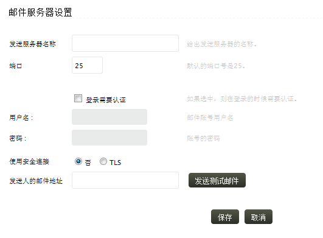

配置邮件及短信
EventLog Analyzer使用电子邮件将计划的、自动生成的报表分发到用户，通过邮件或短信来通知用户。
邮件设置
访问邮件设置页面，可使用以下菜单实现：
怎样配置邮件设置？

-
输入发信箱服务器地址
-
输入发信箱服务器地址的端口
-
如果选择每次登录时验证，邮件服务器将会在每次登录时询问认证信息
-
输入邮件服务器的用户名和密码
-
要确保邮件通信是安全的，请选择TLS选项，如果已选择，那么将会使用传输层安全（TLS）协议来发送邮件
-
输入EventLog Analyzer发送报表、告警通知到的邮件地址，使用发送测试信息按钮，验证邮件服务器设置是否正确
点击保存按钮来完成邮件服务器的设置
如果邮件服务器未配置，EventLog Analyzer将会在您创建报表配置文件或告警配置文件时，提示您对邮件服务器进行配置。
SMS设置
要访问短信设置页面，可通过以下菜单实现：
怎样配置短信设置？
-
在EventLog Analyzer的短信设置页面，输入硬件接入的端口，使用测试端口按钮来验证设备的可用性以及功能。
当点击了测试端口按钮后，这里将会弹出一个窗口，在这里输入要接收短信的手机号码，注意需要加上国家代码（例 + 86
186XXXXXXXX）。如要输入多个手机号码，请使用逗号隔开。
-
点击保存变更按钮完成短信设置。
如果这里没有配置短信设置，那么EventLog Analyzer将会在您创建告警配置文件时，提示您进行设置。
|